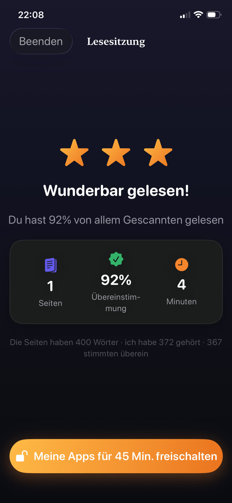

Alle Beteiligten wissen, dass das passiert. Es lohnt sich zu verstehen, wofür das Tagebuch eigentlich da ist, denn die Antwort ändert, wie viel Mühe es wert ist.


Wonach die Lehrkraft wirklich sucht
Meist nicht nach den Titeln. Ein Lesetagebuch steht stellvertretend für eine Frage: Liest dieses Kind zu Hause regelmäßig? Dreißig Schulkinder und eine Lehrkraft bedeuten, dass direkte Beobachtung unmöglich ist, also springt das Tagebuch ein.
Das heißt, das nützliche Signal sind Häufigkeit und Beständigkeit, nicht literarischer Wert. Zwanzig Minuten an zwölf verschiedenen Abenden sagen einer Lehrkraft weit mehr als vier Stunden an einem Samstag.
Warum Papiertagebücher zur Fiktion werden
- Es wird im Nachhinein geschrieben, und die menschliche Erinnerung an das Lesen vom letzten Dienstag ist nahezu wertlos.
- Es setzt voraus, dass ein Elternteil genau in dem Moment anwesend und frei war, in dem gelesen wurde.
- Es wird von der Person selbst gemeldet, die bewertet wird, was in jedem Messsystem ein Problem ist.
- Es hält Absichten genauso leicht fest wie Tatsachen, und später kann niemand den Unterschied erkennen.
Was ein ehrliches Tagebuch enthält
Wenn Sie schon eins führen, lassen Sie es Dinge festhalten, die sich nicht aus dem Gedächtnis rekonstruieren lassen:
- Datum und Uhrzeit jeder Sitzung, nicht nur den Tag.
- Wie lange sie tatsächlich gedauert hat, nicht wie lange sie dauern sollte.
- Was gelesen wurde: das Buch, und idealerweise die Stelle.
- Einen Beleg dafür, dass gelesen wurde, statt eines Hakens, den Sie selbst gesetzt haben.
Das Verzeichnis automatisieren
Das verlässlichste Tagebuch ist eins, an dessen Ausfüllen sich niemand erinnern muss. Wenn das Verzeichnis ein Nebenprodukt des Lesens selbst ist, kann es nicht abdriften, nicht nachträglich aufgefüllt werden und hängt nicht von sonntäglicher Ehrlichkeit ab.
Das nimmt auch die Peinlichkeit eines Tagebuchs, das übertreibt. Eine Lehrkraft, die dem Verzeichnis traut, kann danach handeln; eine, die es für Dekoration hält, ignoriert es, und dann war die Arbeit umsonst.
Ein PDF für die Lehrkraft exportieren
Guardian Reader hält jede Lesesitzung automatisch fest: Datum und Uhrzeit, die Seiten, die Minuten, die Übereinstimmung und den Text, den Ihr Kind tatsächlich laut vorgelesen hat.
Premium exportiert all das im Bereich Fortschritt als PDF, fertig zum Mailen oder Ausdrucken. Es ist ein echtes Verzeichnis der Übung zu Hause, erzeugt aus geprüften Sitzungen statt in letzter Minute erinnert.
Ein Verzeichnis aus geprüftem Lesen
Weil jede Sitzung schon während des Lesens gegen die gescannten Seiten geprüft wird, ist das Tagebuch keine Behauptung über das Lesen. Es ist ein Nebenprodukt davon. Genau dieser Unterschied macht den Export für eine Schule wertvoll.
Lesen schaltet den Bildschirm frei.
Gratis · Kein Konto, kein Tracking
Guardian Reader fürs iPhone holen